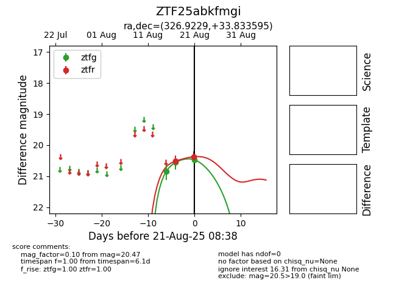

Target ZTF25abkfmgi at 2025-08-21 08:38, see:
FINK: fink-portal.org/ZTF25abkfmgi
Lasair: lasair-ztf.lsst.ac.uk/objects/ZTF25abkfmgi
ALeRCE: alerce.online/object/ZTF25abkfmgi
alt names
ZTF25abkfmgi (ztf,alerce)
coordinates:
equatorial (ra, dec) = (326.9229,+33.83360)
galactic (l, b) = (84.7480,-15.08482)
photometry
last ztfg=20.47, ztfr=20.37
3 ztfg, 2 ztfr detections
